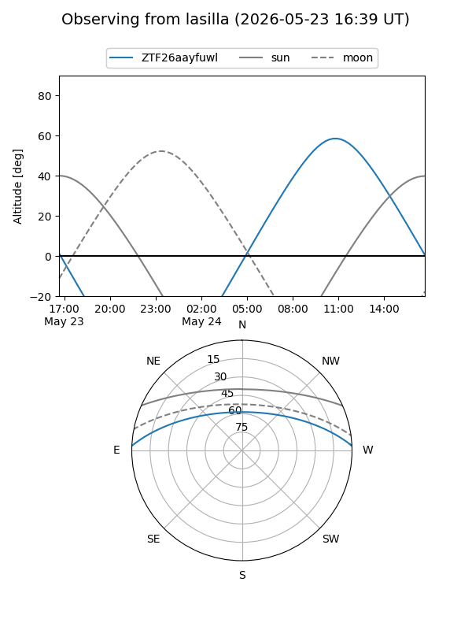
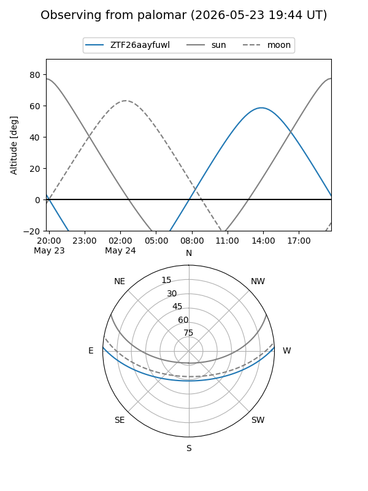

ZTF26aayfuwl
Target ZTF26aayfuwl at 2026-05-23 12:43
Aliases and brokers:
lsst-FINK: link
lsst-Lasair: link
lsst-ALeRCE: link
ztf-FINK: link
ztf-Lasair: link
ztf-ALeRCE: link
alt names
ZTF26aayfuwl (ztf,fink_ztf)
Coordinates:
equatorial (ra, dec) = 332.9124,+1.97176
equatorial (HMS+DMS) = 22:11:38.97,+01:58:18.34
galactic (l, b) = (63.5643,-41.77486)
Flags:
Photometry:
last ztfg=20.12
1 ztfg detections
Lightcurve
Visibility


Additional plots